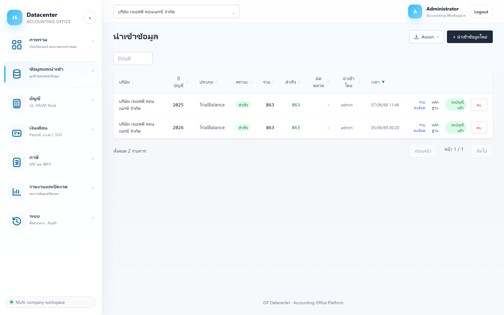
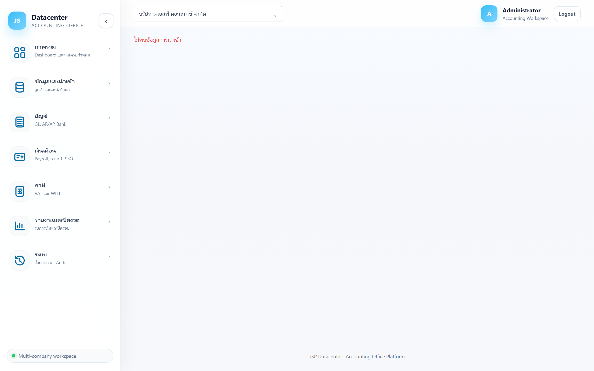

นำเข้าข้อมูล
หัวใจของระบบ — ดึงข้อมูลบัญชีจากโปรแกรม Express เข้าสู่ระบบ ทั้งผังบัญชี ยอดยกมา ความเคลื่อนไหวรายปี และรอบบัญชี ในการทำงานครั้งเดียว
เมนูนี้คือช่องทาง เดียว ในการนำข้อมูลจาก Express เข้าระบบ เมื่อกดนำเข้า ระบบจะดึง ทุกอย่างที่เกี่ยวข้อง (บัญชี GL, ยอดยกมา/เคลื่อนไหว, รอบบัญชี, ทะเบียนสินทรัพย์ FAMAS, ภาษีซื้อ-ขาย ฯลฯ) ให้พร้อมกัน — หน้าอื่นๆ ในระบบจึง ไม่มี ปุ่มนำเข้าแยก และจะไม่ให้แก้ไขทับข้อมูลที่มาจาก Express
1. การเข้าใช้งาน
- เลือกบริษัทลูกค้า ที่แถบด้านบนก่อน (ระบบนำเข้าตามบริษัทที่เลือกอยู่)
- เปิดเมนู ข้อมูลและนำเข้า → นำเข้าข้อมูล
2. องค์ประกอบของหน้าจอ
หน้าจอแสดง “ประวัติการนำเข้า” ของบริษัทที่เลือก โดยแต่ละครั้งที่นำเข้าจะเป็น 1 แถว (batch)

ปุ่มการทำงานมุมขวาบน
| ปุ่ม | หน้าที่ |
|---|---|
| + นำเข้าข้อมูลใหม่ | เปิดฟอร์มเพื่อเริ่มนำเข้าข้อมูลรอบปีบัญชีใหม่ (ดูขั้นตอนข้อ 3) |
| ส่งออก | ส่งออกประวัติการนำเข้าเป็นไฟล์ (Excel/CSV/PDF) จะแสดงเมื่อมีประวัติอย่างน้อย 1 รายการ |
คอลัมน์ในตารางประวัติ
| คอลัมน์ | ความหมาย |
|---|---|
| บริษัท | ชื่อบริษัทลูกค้าที่นำเข้า |
| ปีบัญชี | ปีบัญชี (ค.ศ.) ของข้อมูลที่นำเข้า |
| ประเภท | ชนิดข้อมูลที่นำเข้า (เช่น TrialBalance = ผังบัญชี + ยอดงบทดลองจาก Express) |
| สถานะ | ผลการนำเข้า — ดูตารางสถานะด้านล่าง |
| รวม | จำนวนแถวข้อมูลทั้งหมดที่อ่านจาก Express |
| สำเร็จ | จำนวนแถวที่ผ่านการตรวจสอบและนำเข้าได้ (สีเขียว) |
| ผิดพลาด | จำนวนแถวที่มีปัญหา (สีแดง) — ถ้าไม่มีจะแสดง - |
| นำเข้าโดย | ชื่อผู้ใช้ที่กดนำเข้า |
| เวลา | วัน-เวลาที่นำเข้า |
ความหมายของสถานะ
| สถานะ | ความหมาย |
|---|---|
| รอดำเนินการ | สร้าง batch แล้ว รอเริ่มประมวลผล |
| กำลังนำเข้า | ระบบกำลังอ่านและตรวจข้อมูล |
| สำเร็จ | นำเข้าเรียบร้อย ข้อมูลพร้อมใช้งาน |
| มีข้อผิดพลาด | พบแถวที่มีปัญหา ให้กด “ดูข้อผิดพลาด” เพื่อตรวจ |
| ยกเลิก | การนำเข้าถูกยกเลิก |
3. ขั้นตอนการนำเข้าข้อมูลใหม่
- ตรวจว่าเลือกบริษัทถูกต้อง ที่แถบด้านบน
- กด + นำเข้าข้อมูลใหม่ — ฟอร์มจะปรากฏขึ้น โดยช่อง “บริษัทลูกค้า” จะล็อกตามบริษัทที่เลือกอยู่
- กรอกปีบัญชี (ค.ศ.) ที่ต้องการนำเข้า เช่น
2025 - กด เริ่มนำเข้า — ระบบจะอ่านไฟล์ Express ของบริษัทนั้น ตรวจความถูกต้อง แล้วบันทึกเข้าระบบ
- เมื่อสำเร็จ ระบบ ลงบัญชีให้อัตโนมัติ (สร้างผังบัญชี + รายการยอดยกมา/เคลื่อนไหว) และแถวใหม่จะขึ้นในตารางพร้อมป้าย ลงบัญชีแล้ว
ระบบจับคู่บริษัทกับข้อมูล Express ด้วย “รหัสบริษัท” (เช่น JSIT2016) และอ่านจากไฟล์ต้นทางของ Express โดยตรง
ผู้ใช้ไม่ต้องเลือกไฟล์เอง
ถ้านำเข้า/Post ปีบัญชีเดิมอีกครั้ง ระบบจะ แทนที่ข้อมูลปีเดียวกันที่เคยลงไว้ก่อนหน้า (ยอดยกมา/เคลื่อนไหวของปีนั้น) เพื่อไม่ให้ยอดซ้ำซ้อน
4. การทำงานกับแต่ละรายการ (ปุ่มท้ายแถว)
| ปุ่ม | หน้าที่ |
|---|---|
| รายละเอียด | เปิดหน้าผลการตรวจสอบของ batch นั้น (ดูข้อ 5) |
| ดูข้อผิดพลาด | แสดงเมื่อมีแถวผิดพลาด — เปิดดูรายการที่มีปัญหาเพื่อแก้ไข |
| หลักฐาน | เปิดหลักฐานการนำเข้า (snapshot ไฟล์ Express ต้นฉบับที่เก็บถาวรไว้ตรวจย้อนหลัง) |
| ลงบัญชีแล้ว / Post เข้าบัญชี | บอกว่าข้อมูลถูกลงบัญชีแล้วหรือยัง — หากยัง กดปุ่ม “Post เข้าบัญชี” เพื่อยกข้อมูลเข้าระบบบัญชีจริง |
| ลบ | ลบ batch และข้อมูลที่เกี่ยวข้อง (ระบบจะถามยืนยัน — ดูคำเตือนด้านล่าง) |
ถ้า batch นั้น ลงบัญชีแล้ว การลบจะดึงข้อมูลที่ post เข้าระบบบัญชี (ยอดยกมา/เคลื่อนไหวปีนั้น) ออกไปด้วย ระบบจะแสดงข้อความยืนยันก่อนเสมอ ควรลบเฉพาะกรณีที่ต้องการนำเข้าใหม่จริงๆ
5. หน้าผลการตรวจสอบ (รายละเอียด batch)
กด “รายละเอียด” ที่ท้ายแถว เพื่อดูสรุปผลการตรวจความถูกต้องของข้อมูลที่นำเข้า

| ตัวเลข | ความหมาย |
|---|---|
| รวมทั้งหมด | จำนวนแถวข้อมูลที่อ่านจาก Express ทั้งหมด |
| ผ่านการตรวจ | จำนวนแถวที่ถูกต้องและนำเข้าได้ |
| มีข้อผิดพลาด | จำนวนแถวที่มีปัญหา — ถ้ามากกว่า 0 จะแสดงรายการปัญหาด้านล่างเพื่อให้แก้ |
| อัตราผ่าน | เปอร์เซ็นต์แถวที่ผ่าน (ควรได้ 100% จึงจะพร้อมใช้งานเต็มรูปแบบ) |
ถ้าขึ้น “ข้อมูลผ่านการตรวจสอบทั้งหมด — ไม่พบข้อผิดพลาด พร้อมใช้งาน” แสดงว่าข้อมูลพร้อมนำไปทำงบทดลอง งบการเงิน และรายงานอื่นได้ทันที
6. สิ่งที่ควรรู้
- ข้อมูลจาก Express เป็นยอด รวมรายปี — งบทดลอง/บัญชีแยกประเภทรายปีถูกต้องแม่นยำ แต่การกรองรายเดือนภายในปีอาจไม่ละเอียด
- ระบบเก็บ สำเนาไฟล์ Express ต้นฉบับ (หลักฐาน) ของทุกครั้งที่นำเข้า ไว้ตรวจย้อนหลังได้ยาวนานตามกฎหมาย
- ข้อมูลที่ Express ไม่มี (เงินเดือน, ค่าใช้จ่ายจ่ายล่วงหน้า, รายการปรับปรุงปิดงบ ฯลฯ) จะป้อนที่เมนูเฉพาะของงานนั้น ไม่ใช่ที่หน้านี้
เมื่อนำเข้าสำเร็จแล้ว ขั้นต่อไปคือตรวจสอบยอดที่เมนู งบทดลอง → และ บัญชีแยกประเภท →